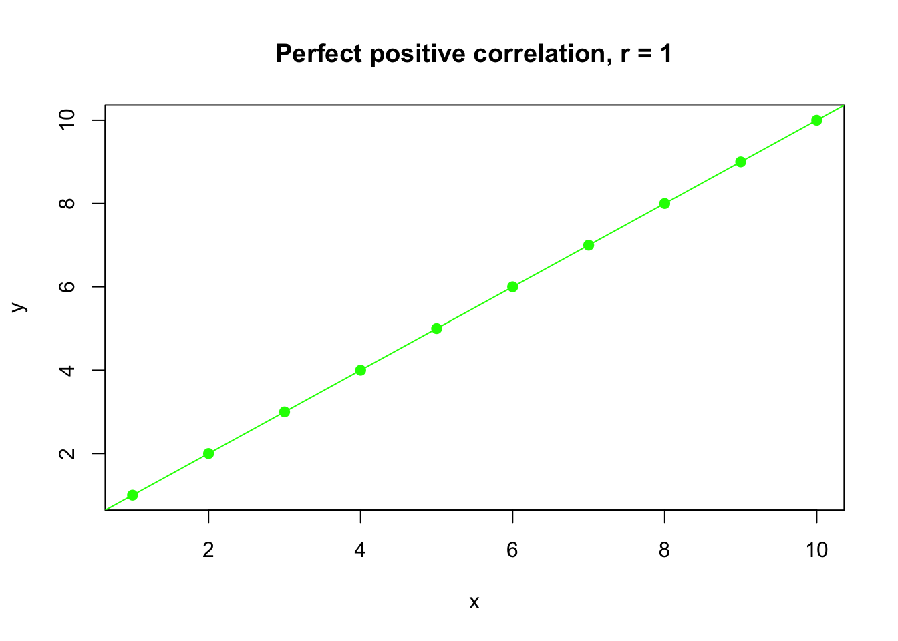
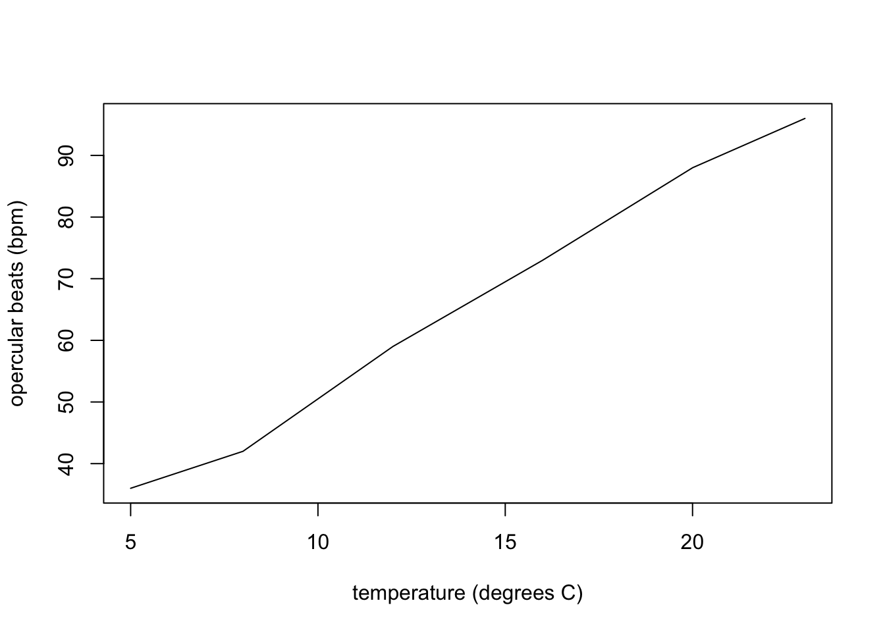
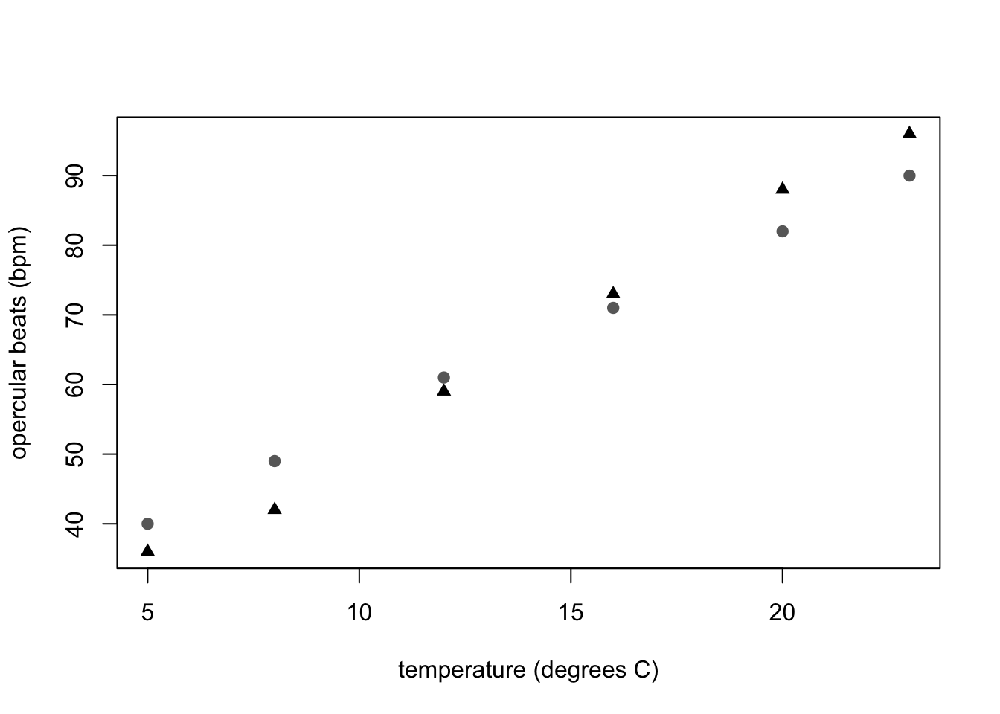
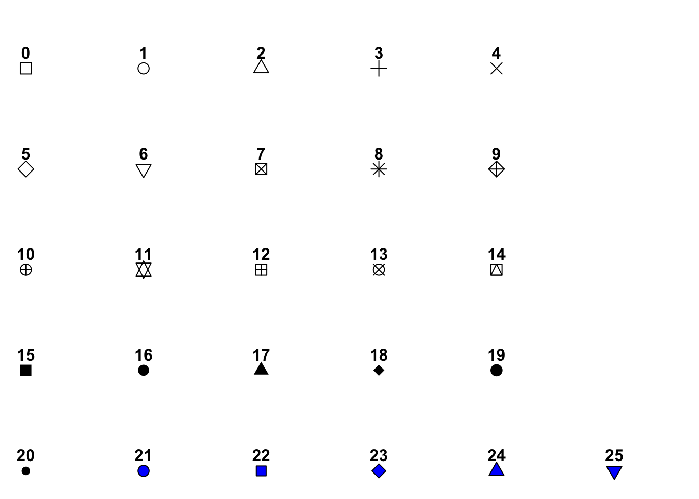

10 Making graphs in R
10.1 Making graphs in R
You might have had experience making graphs using Microsoft Excel, however, making graphs with Excel is not recommended. A number of reasons to choose R over Excel are given in Chapter 1. In addition, the defaults in Excel do not meet standards for good scientific graphs and you do not have the option to learn more sophisticated graphs after you master the basics, as the range of options available in Excel is limited.
You can make very attractive, clean, professional graphs and figures in R. This chapter is a basic introduction to plot() functions in R. More advanced users can use the package ggplot2. There are many good reference manuals for making sophisticated graphs (e.g. Abedin and Mittal 2014; Murrell 2018).
10.2 Scatter plots with plot(x,y)
In R, plot() is a built-in function: you do not need to install a package to call it. There are two mandatory arguments x and y, which are vectors that must have the same length. For example,
x <- c(2, 4, 6, 8, 10)
y <- c(10, 20, 30, 40, 50)Copy and paste the above code into your Console and type Enter/Return. Note that to make a vector we need to use c(). Now, query the value of x by typing x into your Console
x## [1] 2 4 6 8 10This lets us know that x is a vector that is a list of 5 numbers.
The command plot(x, y) will mark points on the graph by taking elements in the same position in the x and y vectors. For example, in the first position of the x and y vectors are 2 and 10, respectively. Because plot(x, y) has x as its first argument, the values of x will correspond to the horizontal axis of the plot. Therefore, the first element of the lists x and y, will be reflected in the plot as a point marked at the 2 position of the horizontal axis and the 10 position on the vertical axis.
As the vectors x and y in our example are a list of 5 numbers, our graph will consist of 5 points, generated by pairing values in the x and y vectors in the same position:
plot(x, y)
TRY IT! Copy and paste the above code into your Console or into a new script and run it. If x and y do not have the same lengths, the plot() function will give an error. Try it! Take the code below by copy and pasting it into your console:
x <- c(2)
y <- c(10, 20, 30, 40, 50)
plot(x, y)## Error in xy.coords(x, y, xlabel, ylabel, log): 'x' and 'y' lengths differNote the error message that is generated so that if you get this error later when coding on your own you might remember that this error is generated because x and y have different lengths.
Now try this code:
x <- c(2, 2, 2, 2, 2)
y <- c(10, 20, 30, 40, 50)
plot(x, y)
length(x)## [1] 5length(y)## [1] 5Note we can use length() to query the length of x and y. In addition, the names x and y are the users choice. A nearly identical plot is generated with the code:
A <- c(2, 2, 2, 2, 2)
B <- c(10, 20, 30, 40, 50)
plot(A, B)
The key is the internal consistency: A and B are the names of the vectors and these same names appear as the arguments of plot(A, B). Can you guess what happens if you try plot(B, A) or plot(A, A)? Type these into your Console and give it a try.
HAND IN
- Which two vectors below will generate a plot if executed before
plot(a, b)?
a <- c(1, 3, 5)
a <- c(2, 4, 5, 6, 7)
b <- c(2, 2, 4, 6)
b <- c(2, 4, 6)- A friend has written the code below, but it will not run. What do you think the problem could be?
a <- c(1, 2, 3)
b <- c(2, 4, 6)
plot(x, y)10.3 Adding axes labels and changing symbols
Note that all of the figures we have made so far are not great: none meet the standards of a good figure. What’s missing?
- meaningful
xandyaxis labels, - maybe it’s more appropriate to show this data connected with a line, and
- maybe you want the symbols to be a different shape or colour.
In addition, to the two manadatory arguments x and y, the plot() function has other optional argument that can be called to make a better figure. Try using the help() to learn about more options to change the look of your plot (refer to Chapter 5, Getting help in R, to recall how to display and read help files):
help(plot)## Help on topic 'plot' was found in the following packages:
##
## Package Library
## base /Library/Frameworks/R.framework/Resources/library
## graphics /Library/Frameworks/R.framework/Versions/4.1/Resources/library
##
##
## Using the first match ...You’ll see there are a lot of optional arguments. First, let’s fix the axis labels.
x <- c(2, 4, 6, 8, 10)
y <- c(10, 20, 30, 40, 50)
plot(x,y, xlab = "temperature (degrees C)", ylab = "growth rate (cm)")
This one is a little better.
TRY IT! Copy and paste the above code into your Console to make sure you can make the graph with axes labels.
If you want to change the symbols, you use the pch argument to change the style (see Section 10.7). Note, that pch = 17 corresponds to filled triangles, so let’s make the graph, but with filled triangles.
plot(x,y, pch = 17, xlab = "temperature (degrees C)", ylab = "growth rate (cm)")Note that the order of the optional arguments is unimportant (the function arguments are separated by ,) particularly where arguments are labelled with xlab = or ylab =. Lets try to see if we can put the arguments out of order and end up with the wrong graph:
plot(pch = 17, ylab = "growth rate (cm)", xlab = "temperature (degrees C)", y, x)
In the above graph, we wanted "growth rate (cm)" and the vertical axis and this has appeared correctly, but the values of growth rate should be c(10, 20, 30, 40, 50) and now we see the values of y have appeared on the horizontal axes rather than on the vertical axis where they should be. This is because y appears before x in the plot command and whichever vector appears first will be read as corresponding to the values on the horizontal axis. On the other hand "ylab =" appears before "xlab =" but this does not cause a problem because "ylab =" still appears on the vertical axis as it should.
10.3.1 Getting a bit more sophisticated
It’s not hard to get more sophisticated with R graphics. The best approach is to explore one of the reference books listed to figure out how to do what you want to do.
One thing most undergrads will probably need or want to do is to visualize two sets of data on the same graph. For example, the goldfish data in Appendix VI of the BIOL 1001 lab manual shows the opercular beats of two fish in response to temperature. It would be logical to show both fish on the same graph, but with different symbols. Here’s how you would do it:
temp <- c(5, 8, 12, 16, 20, 23)This creates the vector of data for the x-axis.
fishA <- c(36, 42, 59, 73, 88, 96)This creates the vector of data for Fish A.
fishB <- c(40, 49, 61, 71, 82, 90)This creates the vector of data for fish B.
First, we plot x and y with the temp vector as x, and the fishA vector as y
plot(temp, fishA, pch = 17, xlab = "temperature (degrees C)", ylab = "opercular beats (bpm)")
Then, to add a second vector of data (fishB) to the same plot, we use:
plot(temp, fishA, pch = 17, xlab = "temperature (degrees C)", ylab = "opercular beats (bpm)")
points(temp, fishB, pch = 19, col = "dimgray")
Caption: Opercular beats of two goldfish over increasing temperature. Triangle symbols represent fish A and dots represent fish B.
Voila!
Note that points() can only be used after plot() as the points() function only adds data points to an existing plot, it does not create a plot on its own.
You can describe what the two symbols represent in the caption. For most scientific journals it is preferred to describe the symbology in the caption, rather than use a legend. However, with more complex graphs, or for some publications, you may wish to include a legend. Legends can be a bit tricky to work with in R - we’ll leave those for a more advanced course.
HAND IN
Re-create the graph above on your own, but this time, make the symbol for fishA an open square and the symbol for fishB a filled circle (see section 10.7). Export this plot and hand it in with your assignment (either as a .pdf file, or by pasting the .pdf file into an MS Word document or other text editor, see section 10.6).
10.4 Line graphs
Finally, if you wanted to have a line joining the points, you’d specify the type = "l" in the arguments of the plot fuction (l is for line, p is for points, and b is for both).
plot(temp, fishA, pch = 17, type = "l", xlab = "temperature (degrees C)", ylab = "opercular beats (bpm)")HAND IN
Re-create the graph above on your own, but this time, also add a line for fishB which
joins the points as is shown above for fishA. Just as in section 10.3, where we used the points() function to an existing plot, we can use the lines() function to add a line to an existing plot. To select the line type, use lty = 2 (or another value), just as you would use pch in the points() function. Export this plot and hand it in with your assignment (by pasting the .pdf file into an MS Word document or other text editor, see section 10.6).
10.5 Other useful plot functions
The generic plot() function makes a scatter plot, with variations.
For other types of plots, R has different functions, but all have similar arguments for adjusting the labels, spacing, tic marks, symbols, etc.
See the following:
barplotto make bar graphs,boxplotto make boxplots,histto make a histogram.
10.6 Exporting your graphs
Once you’ve got plots in the “plot” window that you like, you can export them using them so that you can insert them into things like a word document, a power point file or a website. Click on the down arrow on the “Export” button in the Plots pane in RStudio, then select either to save as an Image or as a PDF. In the “Image” option you can choose various file formats (JPEG, TIFF, PNG, etc.).
Figure 10.1: Export button in the Plots Window
Be sure to check that you have the correct file path (circled in the figure below) and then give your figure a file name that makes sense (see rectangle in the figure below).
Figure 10.2: Setting file path (oval - click the Directory button to change the file path) and file name for your exported figure
10.7 pch cheatsheet
As it is hard to remember that pch = 17 corresponds to filled triangles you can make a little cheat sheet for pch codes using the code below. You may want to print out a chart of the pch codes and tape it up on your wall by your computer, or in the front of your notebook as a handy reference.
#++++++++++++++++++++++++++++++++++++++++++++
#generate a plot of point shapes which R knows about.
#++++++++++++++++++++++++++++++++++++++++++++
generateRPointShapes<-function(){
oldPar<-par()
par(font=2, mar=c(0.5,0,0,0))
y=rev(c(rep(1,6),rep(2,5), rep(3,5), rep(4,5), rep(5,5)))
x=c(rep(1:5,5),6)
plot(x, y, pch = 0:25, cex=1.5, ylim=c(1,5.5), xlim=c(1,6.5),
axes=FALSE, xlab="", ylab="", bg="blue")
text(x, y, labels=0:25, pos=3)
par(mar=oldPar$mar,font=oldPar$font )
}
generateRPointShapes()